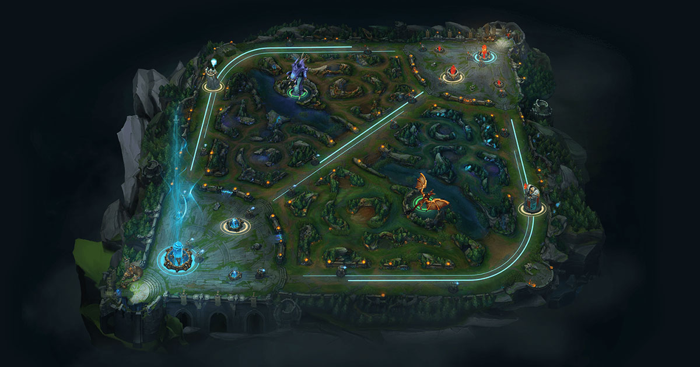

League of Legends es un juego de estrategia por equipos en el que dos equipos de cinco campeones se enfrentan para ver quién destruye antes la base del otro. Puedes eleigr entre un elenco de 140 campeones para realizar jugadas épicas, asesinar rivales y derribar torretas para alzarte con la victoria.
El objetivo es destruir el nexo enemigo situado al lado paralelo de tu nexo.
Para llegar hasta el nexo enemigo, tu equipo tendrá que avanzar por al menos una calle. Hay estructuras defensivas que bloquean tu avance: las torretas y los inhibidores. Cada calle cuenta con tres torretas y un inhibidor. Además, cada nexo tiene dos torretas adicionales.
Las torretas infligen daño a los súbditos y campeones enemigos, y ofrecen a su equipo un campo de visión limitado a través de la niebla de guerra. Ataca a estas estructuras con un grupo de súbditos delante, para que no te ataquen a ti, y sigue avanzando.
Todos los inhibidores están protegidos por una torreta. Destruirlos hará que aparezcan supersúbditos de tu equipo en esa calle durante varios minutos. Después de un tiempo, el inhibidor volverá a aparecer y se dejarán de generar supersúbditos.
El Barón Nashor es el monstruo más poderoso de toda la jungla. Asesinar al Barón otorga a tu equipo daño de ataque y poder de habilidad adicionales, una versión mejorada de Retirada y potencia significativamente a los súbditos que se encuentren cerca de un campeón con la mejora activa.
Los dragones son monstruos muy poderosos que otorgan mejoras únicas en función del elemento al que pertenezcan. Hay cuatro dragones elementales y un Dragón anciano.
La composición de equipo más recomendada está integrada por cinco posiciones diferentes. Las características de cada una de las calles favorecen a ciertos tipos de campeones y roles. ¡Pruébalas todas o elige la que más te guste!
Los campeones de la calle superior son los luchadores solitarios por excelencia. Su trabajo es proteger su calle y centrarse en eliminar a las mayores amenazas del equipo enemigo.
Los junglas dedican su partida a la caza. Se sirven de su destreza y sigilo para saltar de una calle a otra, se encargan de vigilar los monstruos neutrales más importantes y atacan en el momento preciso cuando un enemigo baja la guardia.
Los campeones de la calle central cuentan con un gran daño explosivo y funcionan muy bien tanto de forma independiente como en equipo. Para ellos, el combate es una peligrosa danza que consiste en encontrar el momento idóneo para acabar con su rival.
Los campeones de la calle inferior son la dinamita del equipo. Hay que protegerlos al comienzo de la partida para asegurarse de que consiguen suficiente oro y experiencia para llevar al equipo a la victoria.
Los campeones de apoyo son los protectores del equipo. Mantienen con vida a sus aliados y se centran en que consigan asesinatos, así como en proteger a su compañero de la calle inferior hasta que se vuelva más fuerte.
Puedes observar una guía más detallada en el siguiente enlace: PDF